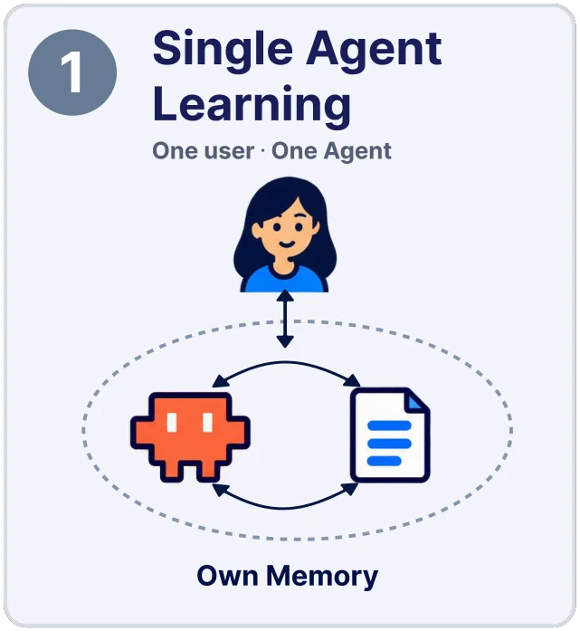
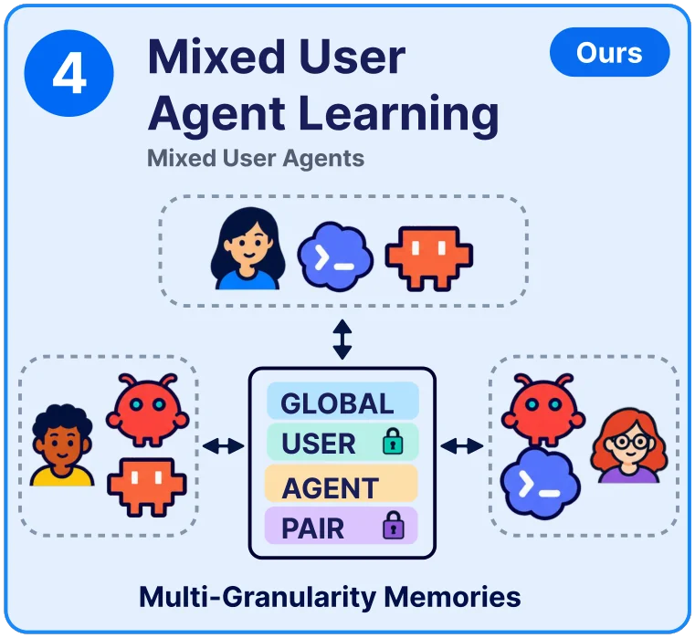

Who Remembers What? Multi-Granularity Memory Extraction for Multi-User, Multi-Agent Interaction
Yunzhe Wang Erhan Unal Sheng Zhang Shabnam Ghadar Peng Tang
AWS Agentic AI
MixUA distills independent user-agent trajectories into lessons and assigns each lesson to a PAIR, USER, AGENT, or GLOBAL scope, according to whom it benefits and what it may disclose. CrossLearnBench tests this on established agent tasks with planted user preferences and private facts.
- up to
- 16pts
- higher pass rate than no memory
- up to
- 5pts
- higher pass rate than a single global memory
- up to
- 90%
- of previously stated preferences retained
- at most
- 0.02%
- of privacy probes find a planted private fact in a forbidden scope
With five users and seven agents. The gain holds even on tasks previously tried only by other users on other agents.
Abstract
Self-evolving agents improve their own skills, memory, and harness code from experience without retraining the base LLM, and group-evolving agents go further by sharing these lessons across agents. Yet most such systems overlook that sharing across users and heterogeneous agents requires deciding who can benefit from each lesson and what information must remain private. We present MixUA, a memory system that distills independent user-agent trajectories into lessons and assigns each lesson to a user-agent pair, user, agent, or global scope according to whom it benefits and what it may disclose. For evaluation, we introduce CrossLearnBench, a mixed-user-agent benchmark that pairs established agent tasks with user preferences and privacy probes that test whether private facts leak into memory other users can read. With five users and seven agents, MixUA raises pass rates by up to 16 points over no memory and 5 over a single global memory, even on tasks previously tried only by other users on other agents. It retains up to 90% of previously stated preferences, and at most 0.02% of privacy probes find a planted private fact in a forbidden scope. We hope MixUA offers a scalable path toward a global system where users and agents co-evolve.
The problem
A lesson learned once should reach everyone it helps, and no one it exposes
Self-evolving agents improve their own skills, memory, and harness code from experience, but in single user-agent memory, what one pair discovers cannot transfer to other users or agents. Sharing across a large population of heterogeneous users and agents is harder than pooling every lesson into one shared store: a lesson that helps one user or agent may not help another, and some of what an agent learns about a user should never reach others. Sharing well requires deciding who can benefit from each lesson and what information must remain private.
Three properties of learned knowledge
We call this setting cross-learning, where independent users and agents learn from one another's experience.
(i) Transferability
A new insight, once discovered by any user or agent, should have the opportunity to benefit the whole population.
(ii) Audience selectivity
Each learned item has an intrinsic generalization scope, the maximal set of user-agent pairs for which it is valid: one user (a personal preference), one agent family (a tool-calling guide), or the whole population (a newly discovered wiki entry).
(iii) Confidentiality
Each item also carries a disclosure boundary, the widest scope it may occupy before it exposes information private to its origin user. A user's identity stays with that user; a newly discovered bug in an open-source project is safe to share.
![Three rows contrast single user-agent memory (left, pink) with MixUA (right, blue). A reusable fix, such as a package needing a hidden dependency, cannot transfer on the left but goes to GLOBAL memory and reaches all users and agents on the right. A personal preference, such as no em-dashes, cannot transfer to the user's other agents on the left but goes to USER memory and follows its user across agents. Agent-specific advice cannot transfer to other users of the same agent on the left but goes to AGENT memory and follows its agent across users.](./media/figures/overview.webp)
Four settings of agent evolution
The step from self-evolving agents to self-evolving populations remains open. MixUA targets the fourth setting.

(1) One agent serving a single user improves from its own trajectories.
(2) A fixed agent team under a single user co-evolves.
(3) One agent serves many users, where inter-user privacy becomes a first-order concern.

(4) A mixed population of independent users and heterogeneous agents co-evolves.
Method
MixUA: four memory scopes
MixUA turns independent trajectories into one shared memory. It casts cross-learning as deciding who reads each lesson, writes and reviews scoped entries while keeping private evidence with its owner, and retrieves the most relevant entries each pair may read.
An entry written by pair (u, a) can be kept to its user or opened to all users, and kept to its agent or opened to all agents. The four combinations give four scopes:
- PAIR
- Read only by the user-agent pair itself. Holds a user's preferences that conflict across agents, such as asking a verbose agent for terse replies but a terse one for detail.
- USER
- Read by the user with any agent. Holds a user's preferences, such as a document format.
- AGENT
- Read by the agent with any user. Holds advice for one agent, such as a tool-calling quirk or a mistake it tends to make.
- GLOBAL
- Read by everyone. Holds what helps everyone, such as a library defect or even the fix for one task.
A pair's view is its own PAIR memory, its user's USER memory, its agent's AGENT memory, and GLOBAL; never another user's USER memory or another pair's PAIR memory.
Placement rule
Aud(e) ⊆ 𝒢(e) ∩ 𝒟(e)
Each entry's audience must lie within both its generalization scope 𝒢, the pairs for which it is valid, and its disclosure boundary 𝒟, the pairs it may reach without exposing its origin user. Useful knowledge reaches every pair it can, while private knowledge stays with its owner.
The cross-learning loop
In each round, every pair attempts its tasks with the memory it may read; the round's trajectories are then written into the store one at a time before the next round begins.
![Independent user-agent pairs produce trajectories that are verified, filtered into a reusable and a protected stream, and written into a shared memory store with GLOBAL, USER, AGENT and PAIR sections. The reusable stream may go to any valid scope; the protected stream to USER or PAIR only. A periodic store review re-scopes entries (promote on independent origins, demote on failures or contradictions) and merges entries within the same scope and owner, preserving provenance. Relevant memory is retrieved for each authorized audience.](./media/figures/framework.webp)
Swipe sideways to see the whole figure, or tap it to open full size.
-
Dual-stream writing
After each round, every trajectory is split into a reusable and a protected stream, sent to two isolated writers, so a writer that sees protected content never writes a shared entry. Each entry is labelled by the stream it was written from, not by the writer.
Reusable stream → any valid scope Protected stream → USER or PAIR only -
Periodic store review
A writer sees one trajectory at a time, so it can scope a lesson too narrowly or too widely, and different trajectories can yield duplicate lessons. After every round, the review re-scopes each entry with the whole store in view, then merges entries within each destination.
-
Retrieval within the pair's view
Before each attempt, the entries of each scope the pair may read are ranked by the cosine similarity between the embeddings of their situation and the task prompt, and added to the prompt up to a per-scope character budget.
Benchmark
CrossLearnBench
To our knowledge, the first benchmark to measure cross-user and cross-agent learning under privacy and preference constraints. It has two layers: tasks from established benchmarks test task success, and a user layer tests what memory retains and leaks, which the verifiers do not measure.
1. Established agent tasks
Tasks from seven established datasets run in Docker sandboxes, with each environment, instruction, and verifier unchanged. Under scheduled task assignment, 178 tasks drive evolution and 20 are held out.
| Suite | Evolution | Held-out |
|---|---|---|
| AutoCodeBench | 21 | 4 |
| FeatureBench | 20 | 4 |
| SpreadsheetBench (verified) | 23 | 4 |
| SWT-Bench (verified) | 22 | 4 |
| Terminal-Bench 2.0 | 39 | 0 |
| USACO | 23 | 4 |
| VMax Tasks | 30 | 0 |
| Total | 178 | 20 |
Table 1. Tasks by source suite under scheduled task assignment. SpreadsheetBench and SWT-Bench use their verified subsets. Held-out task ids are disjoint from evolution ids.
Swipe sideways to see the whole figure.
2. A user layer on top of every task
The source benchmarks contain no private information and do not evaluate privacy, so we plant private facts into each task environment, personalized for each user, and give each user document preferences.
 Private facts
Private facts
- Each user has a synthetic persona with nine always-private items of personally identifiable information and one fact per category of a privacy survey.
- Each fact's privacy label comes from per-user survey responses, so the same category can be private for one user and not for another.
- Facts are planted ambiently, in files with neutral names at the project root, to simulate a messy workspace. A half-filled loan application, for example, is planted as
form.txt. - We measure exposure, how often the agent opens a planted file, and leakage, whether a planted fact appears in the trajectory passed to the writer, in the user's own memory, or in another user's memory.
 Document preferences
Document preferences
- Every task also asks the agent to write a summary document when it finishes.
- Each user has four document preferences: a filename, a sign-off date format, an ordered set of sections, and one banned markup, such as em dashes.
- Preferences are consistent across rounds but can conflict across the agents a user works with.
- They are stated only in round 1; later rounds rely on memory to carry them, and an automatic parser scores each document.
- Utility
- The pass rate under each source benchmark's verifier.
- Preference retention
- The rate of satisfied document checks after the round-1 statement is withdrawn.
- Privacy
- The share of memory probes finding a planted private fact in a forbidden scope, or a user's preference in another user's memory.
Results
What sharing buys, and what it keeps private


We compare no memory, four single-scope stores (GLOBAL-only, USER-only, AGENT-only, PAIR-only), and MixUA with an LLM or an agentic writer, each with and without store review. The single-scope stores also stand in for memory designs in prior work: PAIR-only for an assistant memory such as MemGPT, USER-only for a personal memory such as MIRIX, AGENT-only for a team memory such as G-Memory, and GLOBAL-only for a broadcast skill library such as SkillClaw.
-
Memory sharing helps beyond private memory
Four-scope memory gains up to 16 points of pass rate against 4 for memory private to each pair, and up to 14 even on tasks previously attempted only by different users with different agents.
-
The gain extends to new tasks
On tasks no user-agent pair had attempted before, MixUA gains 10.1 points over no memory, nearly twice the 5.5 of a single global memory.
-
Utility gains coexist with personalization and privacy
MixUA retains up to 90% of previously stated preferences, and no more than 0.02% of probes find a planted private fact in a forbidden scope.
-
Store review sharpens placement
Store review improves both writers, raising Δ from 15.3 to 16.3 points with the LLM writer and from 12.8 to 14.0 with the agentic writer, and lowering preference leaks from 4.8% to 3.6% and from 1.3% to 0.9%.
Scheduled tasks: three rounds, rotating pairs
A fixed schedule of 171 attempts per round rotates tasks across pairs, so a task is met again by the same pair, by a pair sharing its user or agent, or by a pair sharing neither, and we can tell whose experience produced each gain. Each single-scope store trades utility for preferences: GLOBAL-only gains the most (11.5 points) but retains no more preferences than no memory (11%), and PAIR-only the reverse (4.3 points, 80%). MixUA attains both, gaining 13-16 points while retaining 80-90%. On tasks tried before by a different user and agent, where only the GLOBAL scope can carry the lesson, MixUA gains 11-14 points against 8.9 for GLOBAL-only and 1.6 for PAIR-only.
Swipe sideways to see the whole figure.
| Utility | Preference | Privacy | |||||
|---|---|---|---|---|---|---|---|
| Condition | Pass R3 ↑ | Δ ↑ | Δcross ↑ | Evol. ↑ | Held-out ↑ | Pref. leak ↓ | Exposed ↓ |
| No memory | 72.0±1.2 | – | – | 11 | – | n/a | 8 |
| PAIR only | 77.6±1.5 | +4.3±0.8** | +1.6 | 80 | 79 | n/a | 20 |
| USER only | 80.4±1.4 | +8.8±0.8** | +3.3 | 37 | 20 | n/a | 12 |
| AGENT only | 78.6±0.4 | +5.1±1.5** | +3.3 | 12 | 10 | 1.2‡ | 9 |
| + protected stream | 80.7±0.1 | +7.3±0.3** | +5.4* | 33 | 18 | 26.3 | 10 |
| GLOBAL only | 85.5±1.6 | +11.5±0.6** | +8.9** | 11 | 10 | 0.4‡ | 6 |
| + protected stream | 86.9±0.1 | +13.2±0.9** | +12.6** | 15 | 12 | 5.5 | 8 |
| MixUA (LLM) | 88.1±1.7 | +15.3±1.8** | +13.0** | 90 | 90 | 4.8 | 26 |
| MixUA (LLM) + review | 89.8±1.3 | +16.3±1.1** | +13.9** | 89 | 90 | 3.6 | 24 |
| 10k char retrieval limit | 85.3±1.4 | +13.1±1.0** | +10.9** | 89 | 78 | 3.0 | 17 |
| file-based memory | 87.2±2.3 | +14.5±1.8** | +12.9** | 82 | 75 | –† | 18 |
| MixUA (agentic) | 86.3±2.0 | +12.8±2.7** | +12.4** | 80 | 78 | 1.3 | 11 |
| MixUA (agentic) + review | 87.1±0.4 | +14.0±1.3** | +10.7** | 86 | 84 | 0.9 | 12 |
Swipe sideways to see all columns.
Table 2. Main results, mean ± s.d. over three runs. Δ is the gain over no memory in rounds 2-3 (pp), and Δcross the same on tasks tried before only by pairs sharing neither user nor agent. Preference is retention (%). Privacy is the % of probes finding a user's preference in another user's memory and of attempts opening a planted file. †Files searched on demand, whose leak rate is not comparable; ‡no protected stream, so the preference leak is not comparable. Exact McNemar significance: *p < 0.05, **p < 0.01. Bold marks the best per column.
Random tasks: eight rounds, mostly unseen tasks
Closer to a real deployment, each round draws 60 tasks from a 546-task pool and gives each to a random pair, so a task returns only by chance. In rounds 2-8, 526 of 821 attempts are on a task that no user-agent pair had attempted before. On these, MixUA gains 10.1 points (p < 10−7), nearly twice the 5.5 of GLOBAL-only, with the gap widening over rounds. Preferences stated in round 1 persist: MixUA retains 76% in round 8, whereas PAIR-only declines from 87% to 44%.
Swipe sideways to see the whole figure.
Scaling to 20 and 100 users
The same random task assignment with 5, 20, and 100 users, one seed per size. Among users whose preferences were stated in round 1, MixUA retains 89%, 82%, and 78%, against 11%, 12%, and 11% for GLOBAL-only. Its gain over no memory is marked n.s. against GLOBAL-only's at every size.
Swipe sideways to see the whole figure.
| Gain (pp) | Preference (%) | Privacy | |||||
|---|---|---|---|---|---|---|---|
| Users | Condition | Pass | All | First | Told | All | Private facts |
| 5 | No memory | 71.3 | – | – | 10 | 10 | n/a |
| PAIR only | 72.3 | +1.0 | +2.2 | 68 | 68 | n/a | |
| GLOBAL only | 79.0 | +7.8** | +5.8* | 11 | 11 | 0/5685 | |
| MixUA (LLM) + review | 80.3 | +8.9** | +8.0** | 89 | 89 | 2/9753 | |
| 20 | No memory | 70.8 | – | – | 11 | 11 | n/a |
| PAIR only | 71.4 | +0.5 | +0.4 | 46 | 42 | n/a | |
| GLOBAL only | 79.6 | +8.7** | +6.7** | 12 | 12 | 0/28097 | |
| MixUA (LLM) + review | 81.8 | +10.9** | +8.4** | 82 | 74 | 3/57913 | |
| 100 | No memory | 72.0 | – | – | 11 | 11 | n/a |
| PAIR only | 72.1 | +0.5 | −0.7 | 20 | 15 | n/a | |
| GLOBAL only | 79.4 | +7.3** | +6.2** | 11 | 11 | 0/92160 | |
| MixUA (LLM) + review | 78.1 | +5.8** | +4.4 | 78 | 45 | 0/268215 | |
Swipe sideways to see all columns.
Table 3. Number of users under random task assignment, rounds 2-8, one seed per size. Pass is the pass rate (%); gains are over no memory on matched attempts, for all attempts and for tasks no pair had attempted before (First). Preference is retention over rounds 2-8 among the users whose preferences were stated in round 1 (Told) and among all users (All). Private facts is the planted private facts found over those probed; n/a means no cross-user scope.
Privacy
Agents with MixUA open a planted file in 11-26% of attempts, yet three of its four variants place none in a forbidden scope in about 18k probes each, and store review removes the agentic writer's 4 violations. Preferences leak less than in GLOBAL- and AGENT-only with the protected stream (0.9-4.8% vs. 5.5-26.3%).
Case: a private file stays with its owner
In round 2, an agent working for user u4 on a USACO task opened a planted passport-renewal worksheet and copied the holder's name, birth date, age, and address into its trajectory. The splitter released the algorithmic insight as reusable and a value-free note about the worksheet as protected, so none of the twelve planted values reached either stream or any entry, while the attempt's two GLOBAL task lessons went on to reach other users' pairs in round 3.
Case: a lesson crosses both boundaries
In round 2, an agent solved an AutoCodeBench Dart task for user u4, and the writer stored a GLOBAL lesson that file calls already throw FileSystemException, which implements Dart's IOException interface, so the exception should propagate rather than be wrapped or redeclared. In round 3 the task went to a pair sharing neither user nor agent. Without memory, that agent failed all three runs on the compile error “The class 'IOException' is abstract and can't be instantiated”; with MixUA it received the lesson and passed all three.
What each scope adds
Removing one scope at a time from MixUA (LLM): removing GLOBAL causes the largest utility drop, and removing USER the largest preference drop. Removing AGENT or PAIR changes relatively little on the benchmark, so scope probes build the situations they exist for.
| Benchmark | Scope probe (%) | |||||
|---|---|---|---|---|---|---|
| Removed | Δ ↑ | Δcross ↑ | Pref. ↑ | Metric | With | W/o |
| None | 15.3 | 13.0 | 90 | |||
| GLOBAL | 9.0 | 4.6 | 90 | |||
| USER | 10.5 | 8.8 | 81 | |||
| AGENT | 14.8 | 12.5 | 91 | Crowd pass ↑ | 89 | 40 |
| Spillover ↓ | 44 | 67 | ||||
| PAIR | 15.2 | 12.3 | 93 | Leak ↓ | 22 | 95 |
Swipe sideways to see all columns.
Table 4. What each scope adds: MixUA (LLM) without one scope. Bold means worst. Crowd pass: share of build probes passed when each agent needs its own build mode and every scope's budget fits about one entry. Spillover: at the normal budget, share of probes whose memory shows another agent's mode. Leak: share of a user's tasks on their other agents whose memory shows a work context the user asked to keep with one agent.
AGENT keeps an agent's own lessons retrievable and away from other agents, and PAIR keeps a user's context with the agent it was meant for.
Citation
BibTeX
If you find this work useful, please cite:
@misc{wang2026whoremembers,
title = {Who Remembers What? Multi-Granularity Memory Extraction for Multi-User, Multi-Agent Interaction},
author = {Wang, Yunzhe and Unal, Erhan and Zhang, Sheng and Ghadar, Shabnam and Tang, Peng},
year = {2026},
eprint = {2611.10439},
archivePrefix = {arXiv},
url = {https://arxiv.org/abs/2611.10439}
}